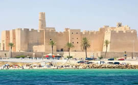

La smartlipo en Tunisie
Réservée aux excès graisseux localisés, la smartlipo consiste à utiliser le laser pour liquéfier et détacher des cellules graisseuses. Cette nouvelle technique de destruction des graisses est particulièrement recommandée pour les petites quantités ou les zones plus délicates (menton, visage, etc).
Déroulement
 L’intervention se déroule sous anesthésie locale. A l’aide d’une fine incision sous la peau, le chirurgien introduit une fibre optique de laser en faisant exploser les cellules graisseuses et en les transformant en liquide. Ce liquide sera naturellement éliminé par le corps. Par rapport à la liposuccion classique, la smartlipo aide à retendre la peau avec un effet lifting en stimulant les fibroblastes. L’intervention est particulièrement adaptée pour les petites zones du visage (menton, mâchoire et cou).
L’intervention se déroule sous anesthésie locale. A l’aide d’une fine incision sous la peau, le chirurgien introduit une fibre optique de laser en faisant exploser les cellules graisseuses et en les transformant en liquide. Ce liquide sera naturellement éliminé par le corps. Par rapport à la liposuccion classique, la smartlipo aide à retendre la peau avec un effet lifting en stimulant les fibroblastes. L’intervention est particulièrement adaptée pour les petites zones du visage (menton, mâchoire et cou).
La smartlipo est une intervention très légère qui se déroule en ambulatoire. Les incisions sont plus petites car la canule est plus fine dans le cadre d’une smartlipo. Le temps de récupération est relativement court. Le patient peut sortir de la clinique quelques heures après.
Smartlipo en Tunisie
La smartlipo est réalisable dans notre clinique à Tunis. Le coût de l’intervention est de 1.100 euros. Le retour en France est possible dès le lendemain.
En faisant appel à nos services, vous bénéficiez d’un accès gratuit à l’information et aux conseils de nos chirurgiens, que vous choisissiez de faire ou de ne pas faire l’intervention. Notre équipe est entièrement à votre disposition pour répondre à toutes vos questions.
Pour recevoir un devis gratuit, envoyez votre demande à estheticplanet.paris@gmail.com ou remplissez le formulaire de demande devis en joignant des photos des zones à traiter.
Nos bureaux à Paris sont ouverts du lundi au vendredi de 9H30 à 18H30 au 01 42 74 07 18
Liens utiles :
Les différents types de lyposuccion : https://esthetic-planet.com/differents-types-de-liposuccion.html
Photos de notre clinique esthétique à Tunis : https://esthetic-planet.com/photos-clinique-esthetique-tunis.html